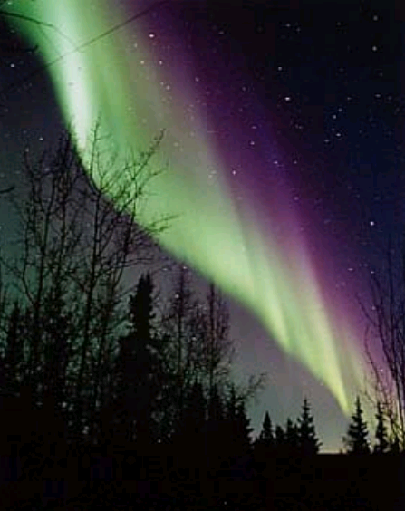

DEVELOPED BY ROBERT ZULU THE PROFESSIONAL PROGRAMMER
WEATHER
What makes weather?
The weather is mainly made from the movement of air and water in the atmosphere. It is related to the transportation of energy around the Earth and the intensity of the incoming solar radiation that is unevenly received around the planet. The transportation of heat energy, either from the sun or from the earth itself, can be helped by the crust, ocean or atmospheric movements that occur.
Without the sun, the earth would have no weather patterns or circulations at all. Due to the heat radiation the planet receives – air masses can heat and rise, and cool down and sink, causing changes
Is there weather in space?
There is weather in space; however it is not the same types of weather that we on Earth receive for there in no atmosphere outside of ours. The changing conditions in the solar system are what create the types of weather that are experienced in space.
Explosions on the sun give out storms of radiation and large clouds of energetic particles as well as create fluctuating magnetic fields. The particles produced and given out by the sun, in this event, move outwards with solar winds, spreading throughout the solar system. If or when these radiated swarms reach the earth, they can interfere with satellites and electric power grids as well as create radiation belts and the Aurora

How and why do we get Thunder and Lightning?
Thunder and Lightning tend only to occur when cumulonimbus clouds form; and usually the day has been very humid and the temperature higher up in the sky will fall rapidly. These tall dark clouds are full of moisture and contain strong up and down air currents. Cumulonimbus clouds may tower more than 50,000 feet, and cover from just a few square miles up to two hundred square miles. Light travels at 300 million metres per second and sound only around 340 metres per second. This is why when you see lightening you won’t hear the thunder for a short while afterwards because it travels much slower.
A thunderstorm is made up of ice crystals and hailstones.
The
ice crystals have a positive charge, and the hailstones have a negative charge. The hailstones are pushed to the bottom of the thunderstorm and the ice crystals towards the top. When a thunderstorm occurs, the negative charges in the base of the clouds are attracted to the Earth’s surface because of its positive charge and opposites attract. The positive and negative charges within the cloud are then forced apart by the ice crystals which then give off the huge spark of electricity.
A single stroke of lightning can heat the air around it to 30,000 degrees Celsius (54,000 degrees Fahrenheit). This extreme heating causes the air to expand at an explosive rate. The expansion creates a shock wave that turns into a booming sound wave, better known as thunder.
What is a barometer and how does it help forecast the weather?
Barometers measure atmospheric pressure using air, mercury or water. Pressure changes can show short term alterations in the weather forecast. The
barometer was invented by Evangelista Torricelli in 1643.
Water‐based barometers consist of a glass half filled with water and a spout which is attached below the water level. The water level rises above the spout when it is open to the atmosphere. Low air pressure will mean the water level in the spout will rise above the water level in the body. High air pressure will show the water level in the spout to be below the water level in the body.
Mercury barometers are at least 33 inches long and the weight of the mercury creates a vacuum. The mercury changes until it balances with the force exerted by the atmosphere. High atmospheric pressure
forces the mercury higher up in the barometer while lower pressure allows the mercury to sink. However the sale of mercury products was prohibited in 2007 by an EU directive.
The aneroid barometer was invented by Blaise Pascal. The aneroid capsule inside the barometer is made of small flexible metal (made from an alloy of berrylium and copper) and is attached to a very strong spring. The outside pressure causes small movements and this drives the alterations you see on the face of the barometer.
What causes rain?
In clouds, droplets of water combine until the up draughts in the clouds
can no longer support them and they fall to the ground. The more water vapour below the cloud and the stronger the up draughts, the higher the likelihood of rain forming.
Why is it sometimes cloudy and it doesn’t rain?
This is because there is either not enough rain droplets or the up draughts in the cloud are not strong enough. However a tropical rain cloud has plenty of water droplets and therefore it rains from the smallest of clouds.
What is a cloud burst?
Cloud bursts are when large amounts of rain falls, in a short space and can lead to disastrous consequences. Cloud bursts descend from high level clouds and have an average fall rate of 100mm per hour.
How do rainbows form? A rainbow is an arc of colours (usually red, orange, yellow, green, blue, indigo and violet) that can be seen in the sky opposite the sun as a result of refraction of water droplets and light. Rainbows occur when light is given out by the sun and spreads into the atmosphere and then these light rays come into contact with water droplets, such as rain or mist. When the sun light meets the water droplets, it is refracted along the boundary between water and air – resulting in the water acting as a prism. This ‘prism’ splits the sunlight into 7 separate colours of the visible light spectrum, as the rays are reflected inside the droplet and then back out into the air. The colours are now separate as the wavelength for each is different, so red light (having the longest wavelength) appears on the outside of the bow, whereas violet light (shortest wavelength) appears on the inside. The rainbow would take the form of an entire circle, but the Earth’s surface cuts off part of the image and the light cannot reflect enough for the observer to see this. The eye can see an arc or ‘bow’ shape of the refracted light, giving it the name ‘rainbow’. The lower the sun in the sky opposite, the more of the rainbow can be seen as it will be reflected at a higher level. In order to see a full circle rainbow‐ the observer must be above the raindrops and have the sun behind you. There are such things as secondary rainbows, and these form in the same way primary rainbows do but the light is internally reflected twice inside the raindrop rather than just once. This means the intensity of the light reaching the sky is reduced and the colour scheme is opposite as the wavelengths are ordered in reverse.